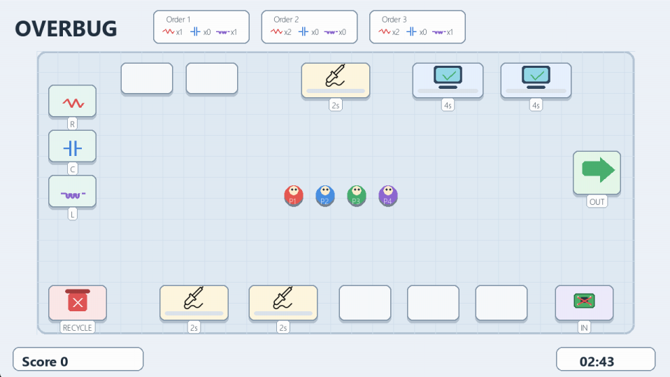

RTES913 - EOS - Overbug
Lab 3: Concurrent Multiplayer Server
Refactor the Lab 2 server for two to four Raspberry Pi players, then choose and justify a race-safe concurrency design.
Before you begin
This lab builds directly on Lab 2. You should be comfortable with C, UDP sockets, and the Lab 2 input pipeline.
Linux/POSIX only
Build and run the Lab 3 server on Ubuntu or Raspberry Pi OS. You may choose threads, processes, message passing, or shared memory where appropriate; Windows support is not required.
- Keep the six-byte
OBINinput packet unchanged. - Reuse
Lab2/reader.con every Raspberry Pi, or use the sharedLab3/player.pykeyboard simulator at home. RunLab2/display.pyon the PC. - Use the copied
Lab3/server.cas your single-player starting point.
System overview
Several Pi readers send input concurrently. The diagram shows the responsibilities your design must coordinate, not a required process or thread layout.
Pi readers or one shared keyboard simulator
Players 1-4 send
OBIN input.
Student work Lab3/server.c
OBST state without delaying the game.
Provided display
Lab2/display.py renders the snapshots.
The rectangle identifies what server.c must do. Students decide whether those responsibilities use a loop, threads, processes, or another suitable design.
1. Game contract and facility map
The multiplayer server keeps this 16-station facility, its coordinates, and its rules. Lab3/overbug_world.h is the server's authoritative layout, and the provided display has matching fixed constants. Extend the player model and coordination design without duplicating or redesigning the game world.

OBST.
Coordinate origin
The world origin
(0, 0) is the top-left corner. x increases rightward and y downward. In the fixed facility map, (x, y) is a rectangle's top-left corner; w and h are its width and height. The playable map begins at (70, 96) and measures 1140 x 540.
1-3: component bins
4: recycle
5: intake
6: shipping
7-9: welders
10-11: verifiers
12-16: tables
Only the three material bins have a component type. Tables, welders, verifiers, intake, shipping, and recycle use COMP_NONE; they store or process items but are not themselves a resistor, capacitor, or inductor.
| Marker / station | Type | Location and size | Action behavior |
|---|---|---|---|
1 bin_resistor | Material bin | (92, 160), 92 x 62 | An empty player picks an unlimited resistor. |
2 bin_capacitor | Material bin | (92, 246), 92 x 62 | An empty player picks an unlimited capacitor. |
3 bin_inductor | Material bin | (92, 332), 92 x 62 | An empty player picks an unlimited inductor. |
4 trash | Recycle | (92, 542), 112 x 68 | Drop any unlocked item; a passed board locked to an order must ship instead. |
5 intake | Board intake | (1058, 542), 112 x 68 | An empty player picks a new raw board. |
6 shipping | Shipping | (1092, 286), 92 x 84 | Accept a passed board locked to an order, score it, and replace that order. |
7 welder_1 | Welder | (304, 542), 132 x 68 | Store one board and one pending material; Solder completes the weld. |
8 welder_2 | Welder | (474, 542), 132 x 68 | Store one board and one pending material; Solder completes the weld. |
9 welder_3 | Welder | (574, 118), 132 x 68 | Store one board and one pending material; Solder completes the weld. |
10 verifier_1 | Verification computer | (786, 118), 136 x 68 | Accept one board and immediately mark it passed or failed. |
11 verifier_2 | Verification computer | (954, 118), 136 x 68 | Accept one board and immediately mark it passed or failed. |
12 table_1 | Table | (230, 118), 100 x 60 | Store or retrieve one item. |
13 table_2 | Table | (354, 118), 100 x 60 | Store or retrieve one item. |
14 table_3 | Table | (646, 542), 100 x 68 | Store or retrieve one item. |
15 table_4 | Table | (776, 542), 100 x 68 | Store or retrieve one item. |
16 table_5 | Table | (906, 542), 100 x 68 | Store or retrieve one item. |
Player position, movement, and facility control
xandyare the centre of the player's circular icon in the fixed 1280 by 720 world.xincreases to the right andyincreases downward.- A player has an 18-pixel radius. The player centre stays between
x = 88..1192andy = 114..618, so the circle cannot leave the playable map. - If a move would move the player's circle into a facility rectangle, the supplied baseline cancels that move and leaves the player at the previous position. Players may pass through other players.
- A new Action press controls the nearest facility within 54 pixels of the player's centre. The distance is measured to the nearest edge of the facility rectangle, not its centre.
- An empty player tries to pick up from that facility. A player carrying an item tries to place it there. If the facility is busy or cannot accept the item, the player keeps the item.
- Press Solder while within 54 pixels of a welder to complete one pending weld immediately. Holding Action or Solder does not repeat the interaction; release and press again for another operation.
Player actions and round rules
- Each player carries at most one item. Movement is bounded by the map and facility rectangles; players may pass through one another.
- An Action rising edge operates the nearest facility within 54 pixels. An empty player picks up; a carrying player drops when that facility accepts the item.
- At a welder, place a raw, soldering, or ready board and then one material. A Solder rising edge near that welder immediately adds the material to the board.
- A verifier accepts a raw, soldering, or ready board and immediately passes it only when its resistor, capacitor, and inductor counts exactly match an unlocked order; otherwise it fails the board.
- There are three active orders. Each needs 1-4 total components, with 0-2 of each type. Shipping a passed, locked board earns
10 + 5 x total required componentspoints and creates a replacement order. - The overall timer stays at 180 seconds in every snapshot, but Lab 3 does not decrement it or end the game automatically. Press Esc to close the display session, then use Ctrl-C to stop the server. Recycling wrong or unwanted unlocked items increases
recycledwithout a score penalty. A passed board locked to an order cannot enter recycle; it must go to shipping.
When two players want the same facility
When valid Action or Solder events contest one shared facility, the server handles the first packet it receives. If that event is valid, it changes the facility state immediately. Later events then see the changed state and fail. First means first received by
recvfrom(), not the first physical button press. The server does not queue a player for a later turn; that player must try again when the facility is available.
2. OBST display interface
Lab2/display.py accepts JSON datagrams with "packet_id":"OBST". It owns the provided fixed facility map, so the server publishes only moving players, orders, and changing station state.
{
"packet_id": "OBST",
"players_count": 2, "remaining_ms": 180000,
"score": 20, "completed": 1, "recycled": 0, "game_over": false,
"players": [{"id": 1, "x": 560.0, "y": 370.0, "held": null},
{"id": 2, "x": 620.0, "y": 370.0, "held": null}],
"orders": [{"id": 1, "req": [1, 0, 1], "locked_board_id": 0}],
"stations": [{"id": "table_5", "item": null},
{"id": "welder_1", "board": null,
"pending_material": null, "progress": 0.0},
{"id": "verifier_1", "item": null, "progress": 0.0}]
}| Field | Required shape and meaning |
|---|---|
| Header, score, and retained timer state | packet_id, players_count, remaining_ms, score, completed, recycled, and game_over. Lab 3 keeps remaining_ms at 180000 and game_over false. |
players[] | One object per active ID: id, x and y for the player's centre, and held. |
orders[] | id, req:[resistor,capacitor,inductor], and locked_board_id. A value of 0 is open; a nonzero value is the passed board ID reserved for that order and means it is ready to ship. |
stations[] | Only changing state for tables, welders, and verifiers. The display looks up each id in its fixed facility constants; do not send station type or coordinates. |
| Station-state fields | Tables add item; welders add board, pending_material, and progress; verifiers add item and progress. Immediate welding and verification leave progress at 0.0. |
| Item value | null, a material {"kind":"material","component":"..."}, or a board with kind, board_id, state, counts, and locked_order_id. |
Compatibility requirement
Do not change the
OBST packet ID, fixed facility IDs, or documented dynamic field names. Add every active player to players[] and set players_count to the same count.
Provided display note
Lab2/display.py is intentionally unchanged. Lab 3 preserves its timer and progress fields for compatibility, but does not calculate them: the timer stays at 03:00 and each progress value stays at 0.0 after an immediate operation.
3. From Lab 2 to Lab 3
| Lab 2 baseline | Lab 3 target |
|---|---|
| One player, ID 1 | Two to four active players, each with a distinct ID and spawn position |
| One loop receives input, updates the game, and sends snapshots | Coordinate input, authoritative updates, and display output with a design you choose |
| No concurrent access to game state | Prevent races when players claim stations, items, orders, or score |
| Snapshots are sent directly from the loop | Transfer a current snapshot to the display without an unbounded backlog |
4. Server requirements
- Add
--players N, acceptingN = 2..4and defaulting to4. - Replace
game.playerwith player storage and an active-player count. Initialize unique IDs and spawn positions. - Accept valid
OBINinput for every active player ID. The packet stays exactly six bytes. - Preserve the 16-station map, interaction rules, and compact
OBSTcontract documented above. - Update movement, station interactions, soldering, orders, and the
OBSTsnapshot for all active players. Players may pass through one another. - Use the provided
Lab2/reader.candLab2/display.py; preserve their fixed facility map and UDP ports17666and17667. - Choose, document, and implement a race-safe design for input handling, game updates, and display output.
- Ensure a slow display cannot indefinitely delay the game or accumulate unbounded stale snapshots.
struct __attribute__((packed)) ob_input_packet {
char magic[4]; /* "OBIN" */
uint8_t player_id; /* active player ID */
uint8_t button_mask; /* 6-bit device state */
};5. Design the coordination
| Responsibility | Required behavior | Design question |
|---|---|---|
| Input | Receive OBIN datagrams on port 17666 and update input for active IDs. |
Which component receives input, and how does authoritative game state receive it? |
| Game | Advance movement, collisions, stations, orders, and score; then create a JSON snapshot. | Who owns these updates, and how are station claims made indivisible? |
| Display | Send OBST JSON to port 17667. |
How is a current snapshot transferred without delaying simulation? |
6. Build and run
After you implement the refactor, use the PC terminals required by your chosen design.
Build the Lab 3 server
cd Lab3
makeThe starter Makefile builds the single-player baseline. Add architecture-specific link options only when your implementation needs them; for example, add -pthread for POSIX threads, mutexes, or spinlocks. POSIX message queues may also require -lrt on some Linux systems.
Start the provided display
python3 ../Lab2/display.py --host 0.0.0.0 --port 17667Start your multiplayer server
./server --players 4 --input-port 17666 --display-host 127.0.0.1 --display-port 17667The supplied starter does not accept --players yet; this command should work after your refactor.
One Raspberry Pi per player
On each Pi, reuse the Lab 2 reader and give every controller a different ID:
cd Lab2
make reader
./reader --server <PC_IP> --player 1
# On the second Pi:
./reader --server <PC_IP> --player 2For three or four players, start readers with --player 3 and --player 4 on additional Pi controllers, and start the server with the matching --players count.
Home simulation without Raspberry Pis
Lab3/player.py opens one keyboard-controller window and sends the same OBIN packets as Pi readers for all four players. It uses the same pygame-ce package as display.py. After your server accepts IDs 1-4, start one simulator:
cd Lab3
python3 player.py --server 127.0.0.1The window sends all four players’ current device states at 60 Hz, so they can act simultaneously. Press Esc or close the window to stop every simulated player.
| Player | Move | Action | Solder |
|---|---|---|---|
| 1 | W / A / S / D | Space | Left Shift |
| 2 | Arrow keys | Right Ctrl | Right Shift |
| 3 | I / J / K / L | O | P |
| 4 | 8 / 4 / 5 / 6 | 0 | 7 |
Some keyboards cannot register every large key combination at once. Test the controls you need, or use separate Raspberry Pi readers when the keyboard limits simultaneous input.
7. QA
Questions
- Present a flowchart of your server design. Identify input handling, the authoritative game-state owner, synchronization, snapshot creation, and output to
display.py. - Which concurrency architecture did you choose: an event loop, threads, processes, or a combination? Justify the choice against the alternatives.
- Identify your critical sections. Explain how your design prevents races when players access shared facilities, items, orders, scores, and snapshots.
- Where is the authoritative game state stored, and how is state transferred between components? Explain the role of in-process memory, shared memory, pipes, or message queues in your design.
- Should the authoritative game state use a memory pool? Justify your answer based on the fixed numbers of players, stations, and orders.
- What other insights do you gain from this lab?